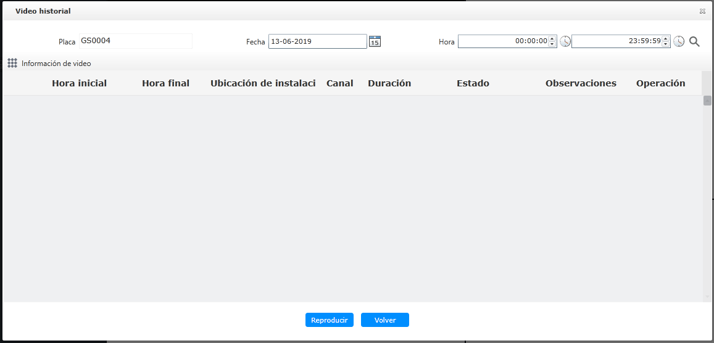

Video histórico
El video histórico realiza principalmente consultas, reproducción y administración para videos del servidor, videos MDVR y
videos descargados de vehículos diferentes.
| • | Clasificación de videos Video del servidor: incluye videos descargados del dispositivo; videos cargados automáticamente por la alarma; videos reproducidos
de clientes;
Video MDVR: guarde video en cada tarjeta SD del suite de seguridad;
Video descargando: el archivo de video que se está descargando desde MDVR al servidor de video.
|
| • | Descarga Descargue el suite de seguridad del vehículo MDVR en el servidor de video;
Descarga el video en el servidor de video al local.
|
| 1. | Expanda la navegación de la lista de vehículos en el lado izquierdo paso a paso, busque el vehículo para ver el video, haga
clic en el lado derecho 〖 
Fig 81 Ventana de video histórico |
| 2. | Seleccione el rango de tiempo que desea ver, haga clic 〖 Fig 82 Ventana de vídeo histórico (1) Los diferentes tipos de videos están marcados con diferentes colores.
(2) Haga clic en el botón 〖
|